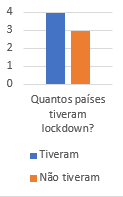
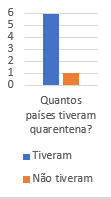
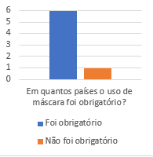
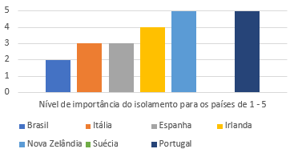
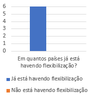

Nós, do oitavo ano da Escola Caminho Aberto, entrevistamos pessoas situadas ao redor do mundo e as perguntamos sobre como está a situação de seus países nesse momento difícil da nossa história, em que temos de enfrentar um vírus que parou o planeta e afetou todos nós. Os países das pessoas entrevistadas são: Brasil, Itália, Espanha, Irlanda, Nova Zelândia, Suécia e Portugal. A matéria a seguir irá te informar sobre as medidas de quarentena tomadas pelos países selecionados.
Quais países tiveram quarentena?
Brasil -> Sim
Itália -> Sim
Espanha -> Sim
Irlanda -> Sim
Nova Zelândia -> Sim
Suécia -> Não
Portugal -> Sim

Quais países tiveram lockdown?
Brasil -> Não
Itália -> Sim
Espanha -> Sim
Irlanda -> Não
Nova Zelândia -> Sim
Suécia -> Não
Portugal -> Sim

Em que países o uso de máscaras foi/é obrigatório?
Brasil -> Sim
Itália -> Sim
Espanha -> Sim
Irlanda -> Sim
Nova Zelândia -> Sim
Suécia -> Não
Portugal -> Sim

Qual foi a reação das população a quarentena em cada país?
Brasil ->Muitos não gostaram e não respeitaram
Itália -> No início, muitos não respeitaram, mas depois entenderam a gravidade da situação
Espanha -> No início, muitos não respeitaram, mas depois entenderam a gravidade da situação
Irlanda -> Boa parte da população respeitou as medidas
Nova Zelândia -> Boa parte da população respeitou as medidas
Suécia -> Não houve quarentena e boa parte do povo apoiou a decisão
Portugal -> Boa parte da população respeitou as medidas

Já está havendo flexibilização?
Brasil -> Sim
Itália -> Sim
Espanha -> Sim
Irlanda -> Sim
Nova Zelândia -> Sim
Suécia -> Sim
Portugal -> Sim

Em que etapa da flexibilização está cada país?
Brasil -> Alguns comércios reabriram, mas ainda são recomendadas algumas medidas
Itália -> Vários comércios reabriram, mas ainda são recomendadas algumas medidas
Espanha -> Vários comércios reabriram, mas ainda são recomendadas algumas medidas
Irlanda -> Todos os locais públicos já estão abertos, mas ainda são recomendadas medidas
Nova Zelândia -> Todos os locais públicos já estão abertos, menos as fronteiras
Suécia -> Todos os locais públicos já estão abertos
Portugal -> Vários comércios reabriram, mas ainda são recomendadas algumas medidas